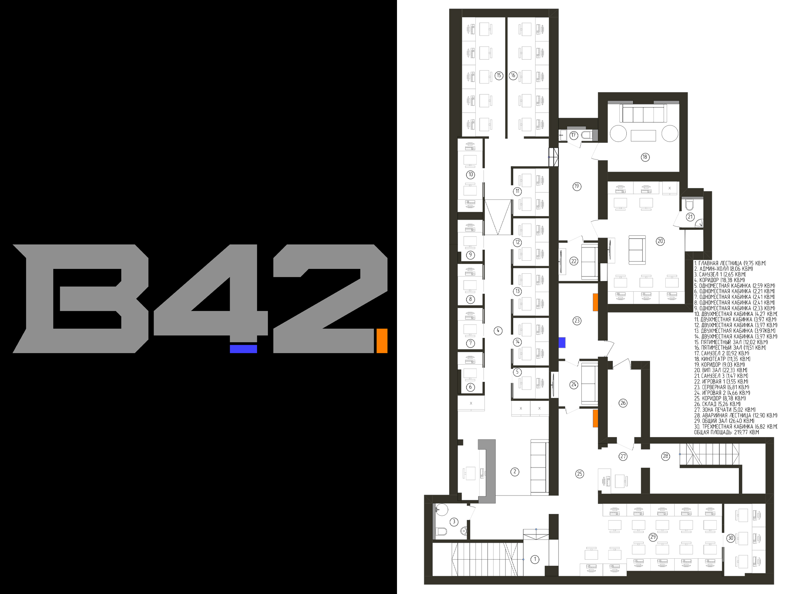
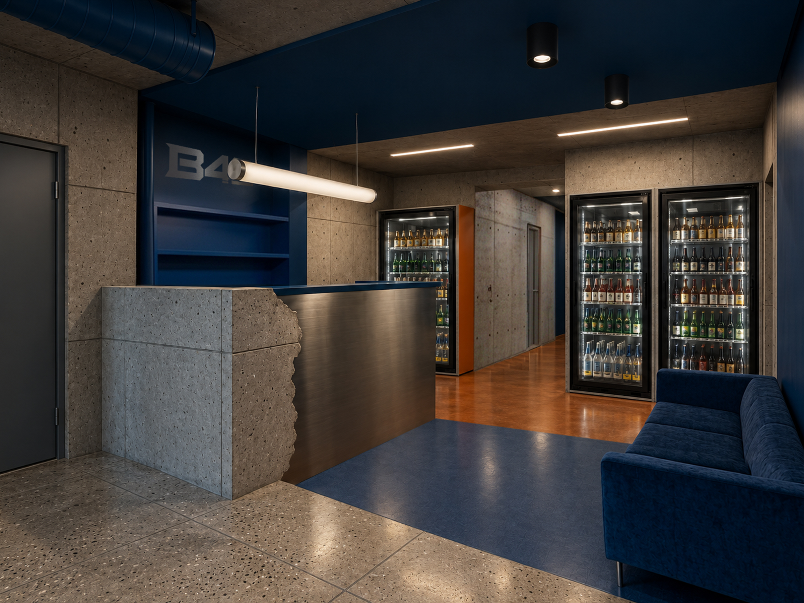
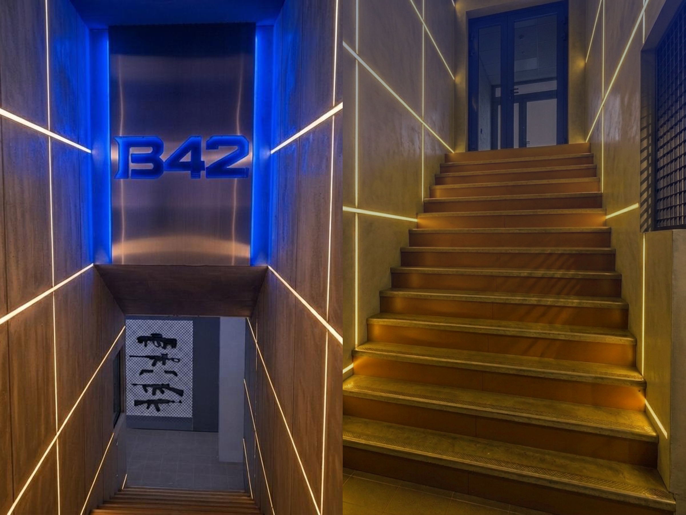
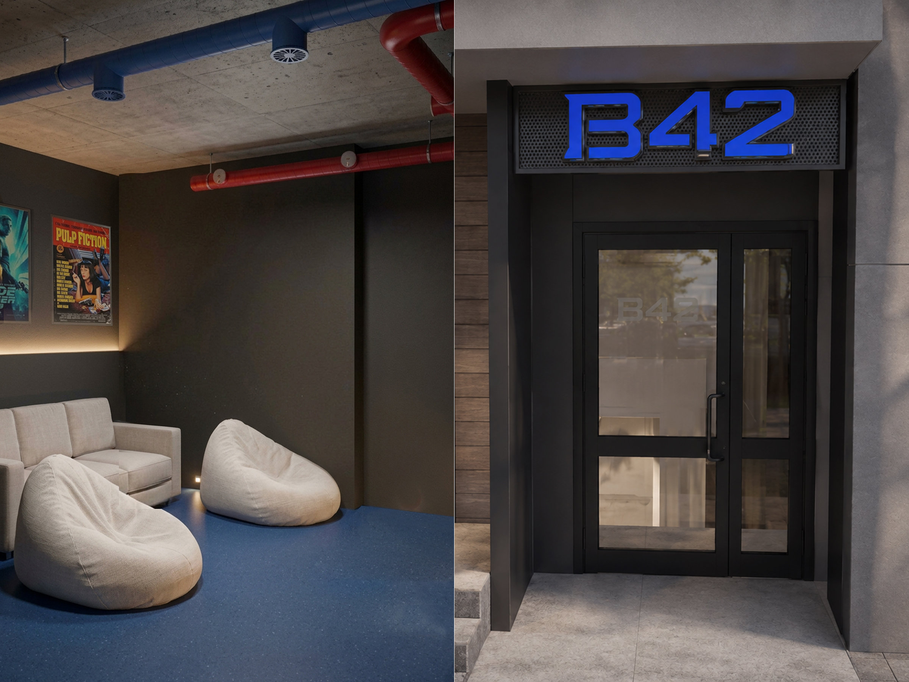
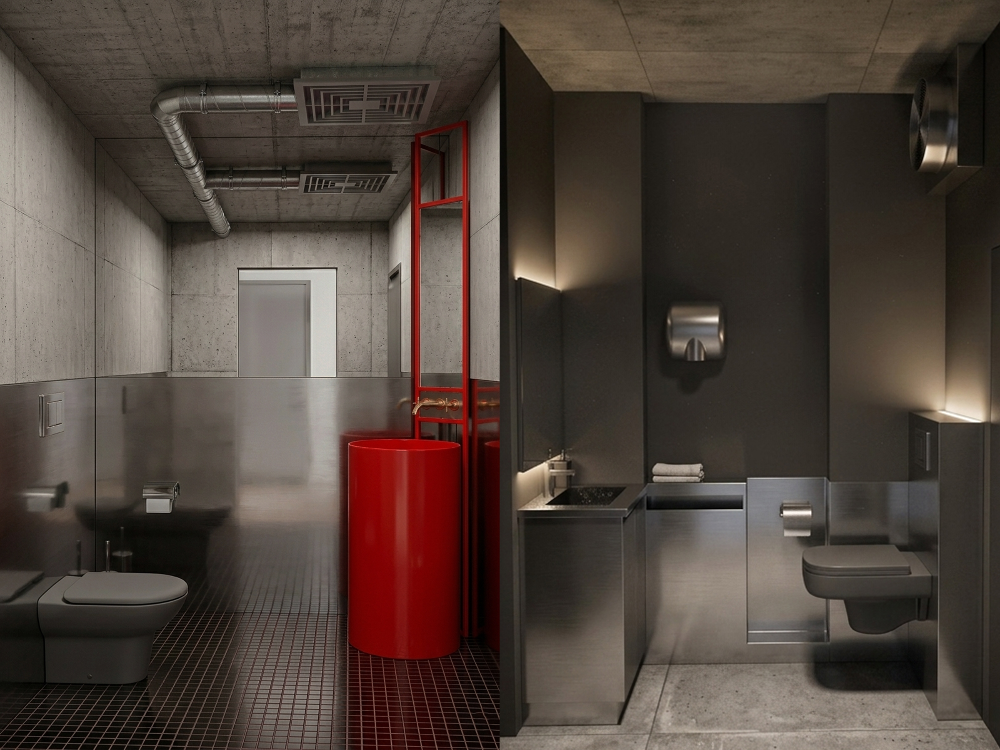
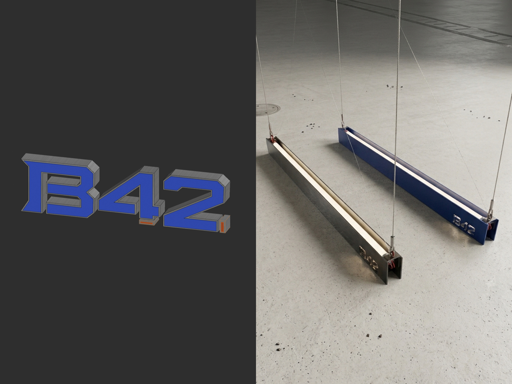
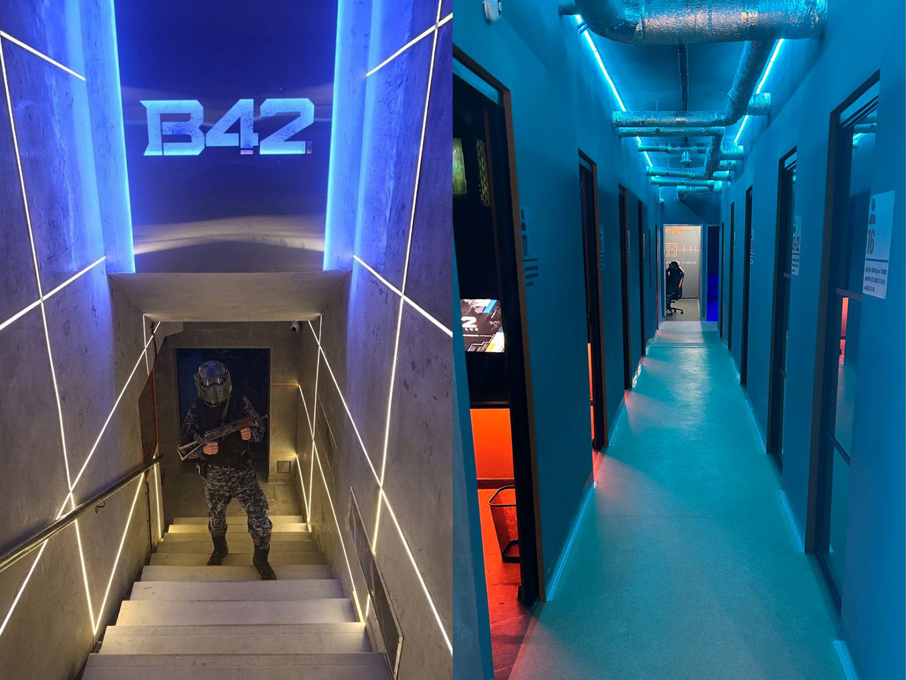
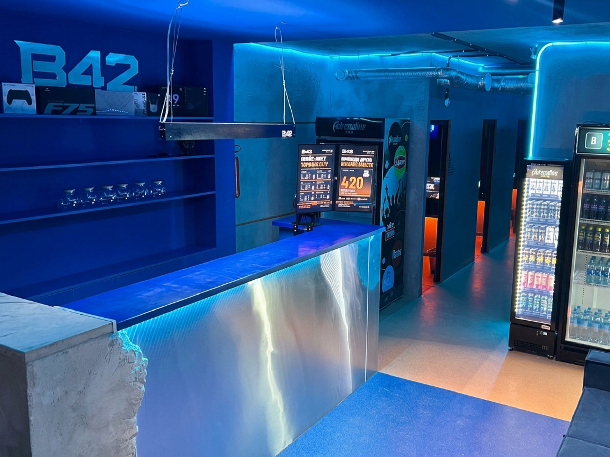

Компьютерный клуб В42, Уфа
Целый развлекательный комплекс с 45 компьютерами, 2 комнатами с приставками, кинотеатром и копицентром на 220 кв.м.








Идея и задача
Проект реализовыван в подвальном помещнии, с лабиринтом несущих стен, множеством коммуникаций от здания сверху и разным уровнем пола.
Помимо условий помещения, нужно было еще реализовать несколько задач: общий зал с компьютерами, сделать комнаты на 1-5 человек, комнаты с приставками, кинотеатр и вип-комнату на 5 человек. И все это грамотно зонировать, сделать удобную коммуникацию, учесть пожарные нормы и сделать классный уникальный дизайн, который отличался бы от обычных компьютерных клубов. По-моему получилось оригинильно - современный индустриальный дизайн, без проваливания в лофт с облицовками под кирпич. В проекте много моего любимого нержавеющего металла, бетона и ярких акцентов.